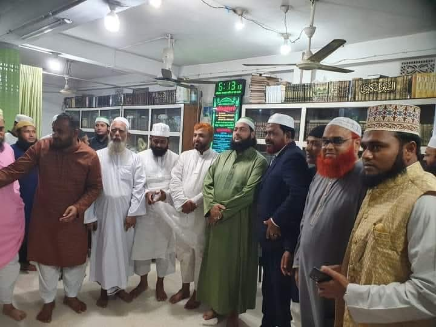

সভাপতি

এস এ এম নুরুল ইসলাম রাজ্জাকী
..................
ফেসবুক: Md Nurul Islam Razzki
আমাদের সম্পর্কে
পীরজাদী ফাউণ্ডেশান ১৯৯৫ সালে স্থাপিত হয়।
কার্যক্রম
মসজিদ
মাদ্রাসা
মক্তব
মাহফিল সমুহ
পীরজাদী ফাওন্ডেশন বার্ষিক মাহফিল সমুহ
প্রতি বছর ৫ ই জানুয়ারি পীরজাদীর মৃত্যু বার্ষিকি উপলক্ষে মাহফিল অনুষ্ঠিত হয়।
প্রতি বছর ঈদে মিলাদুন্নাবী উপলক্ষে মাহফিল অনুষ্ঠিত হয়।
প্রতি বছর ১০ ই মহররম আশুরার মাহফিল অনুষ্ঠিত হয়।
যোগাযোগ
ফোন: ০১৯১৬৭৭৪৯৬৬
ইমেইল: mnirazzaki@gmeil.com
ঠিকানা: গ্রাম- দেবীপুর (ওয়াহেদপুর) থানা ও জেলা: ফেনী।
ফেসবুক পেইজ:পীরজাদী ফাউণ্ডেশান ওয়াহেদপুর ফেনী